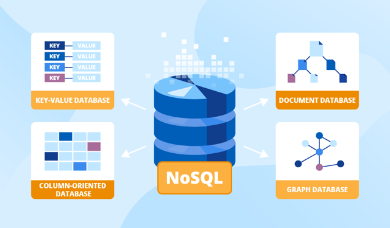

NoSQL Databases
NoSQL databases are databases that store and manage data without using
the traditional table structure found in relational databases. Instead of organizing data into
rows and columns, NoSQL databases use more flexible formats such as documents, key-value pairs,
graphs, or wide columns. This allows them to handle large amounts of unstructured or constantly changing data.
Flexible Data Models:
An advantage of NoSQL databases is their flexible data models. Unlike relational databases
which require a fixed table structure. NoSQL databases allow different records to contain different fields.
This flexibility makes NoSQL databases useful for applications that store large amounts of data that constantly change.
Document Databases:
Document databases store information in documents, often formatted as JSON structures.
Each document can contain multiple fields and nested data, allowing more complex information
to be stored in a single record.
Example of NoSQL Databases:
MongoDB is a widely used NoSQL database. It stores data in flexible documents rather than tradtional tables.
This makes MongoDB popular for modern web applications that need to scale quickly and manage large datasets.
{
"name": "Fido",
"breed": "Beagle",
"color": "Brown/White",
"age": 1.5
}
References:
MongoDB Reference Image Reference